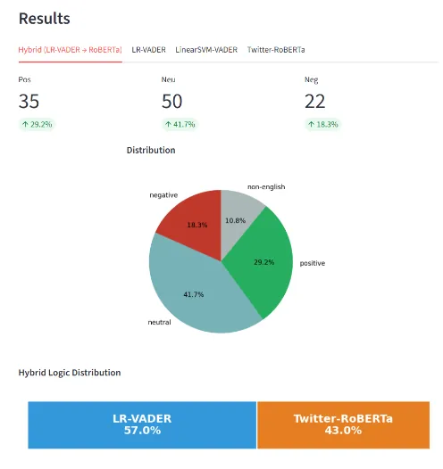
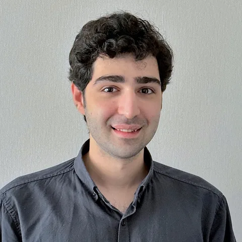
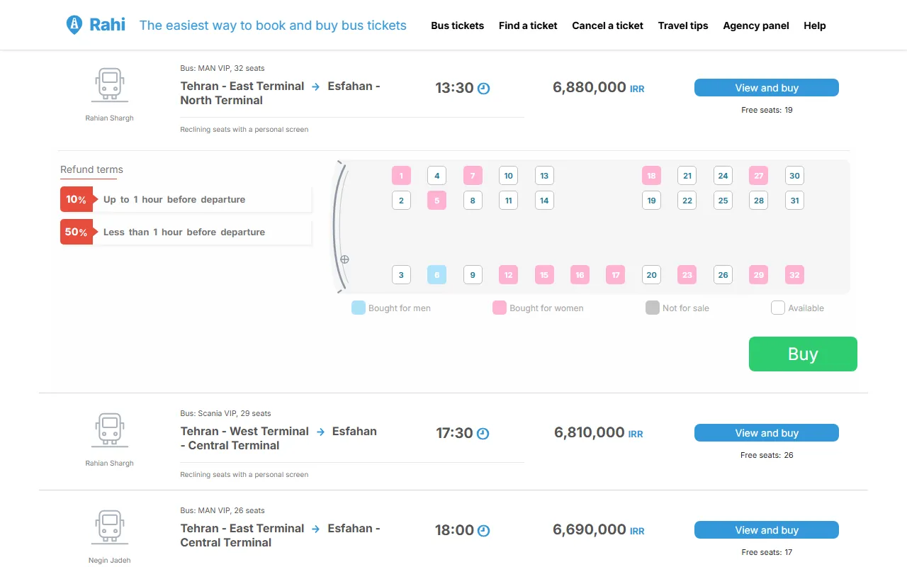
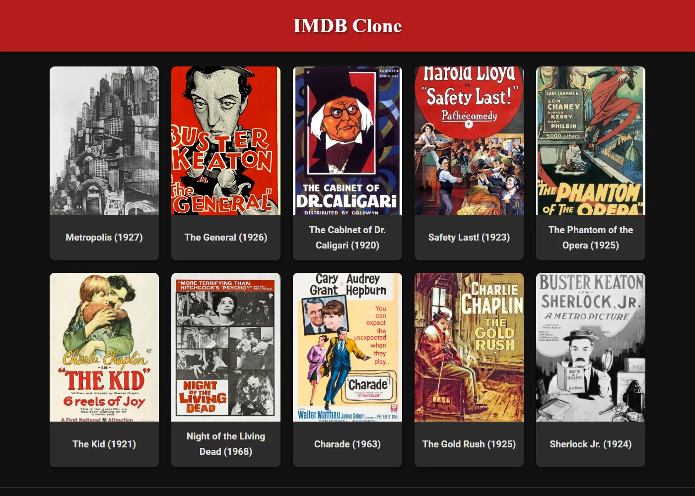
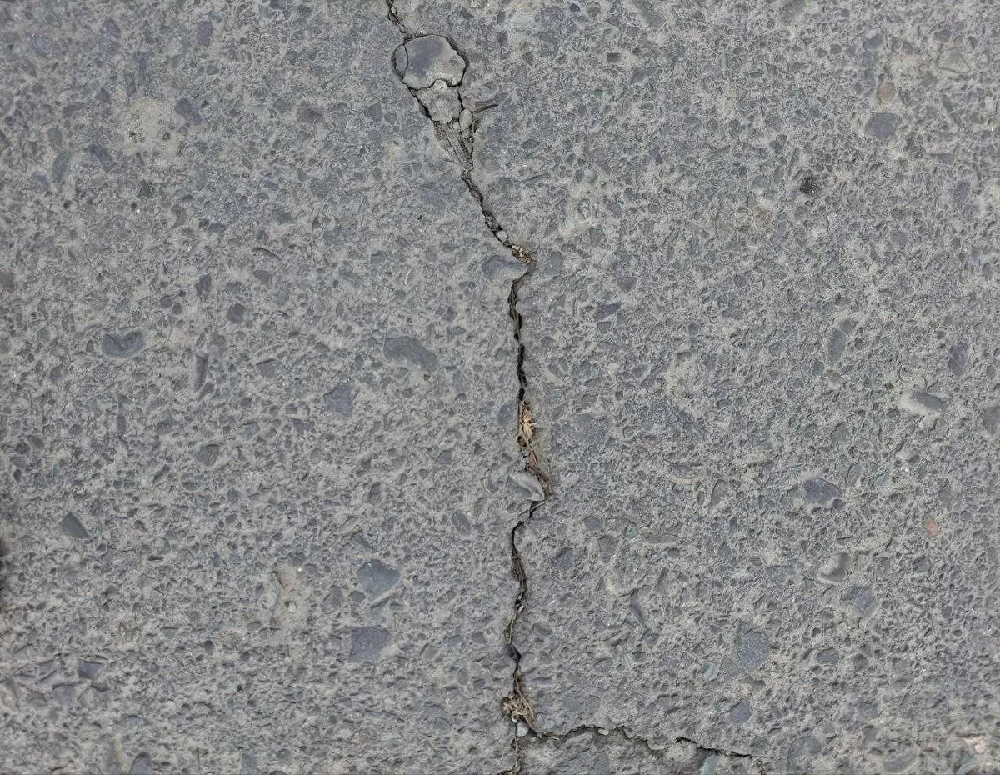
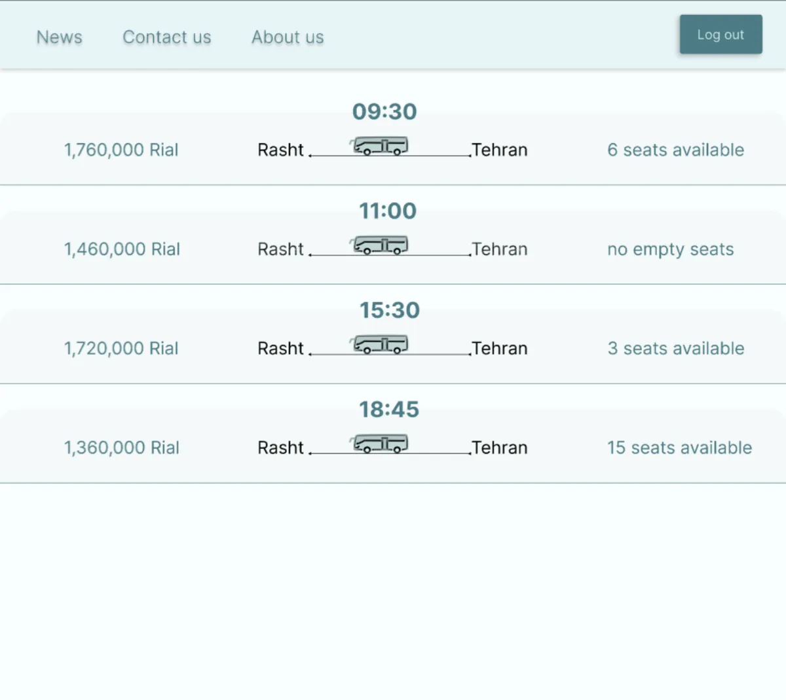

YouTube Comment Sentiment Analysis
How far can lightweight classifiers go against heavy transformers? Classic models improved with lexicon features and weak supervision, plus an app that analyses any video's comments.
Read more

Computer Engineering graduate · K. N. Toosi University of Technology
I hold a BSc in Computer Engineering from K. N. Toosi University of Technology (GPA 18.37 / 20) and am applying for a Master's degree in Germany.
I work on language technology and the software around it: a thesis on sentiment analysis of YouTube comments, an offline Android app for learning German from books and film subtitles, and full-stack web apps. As remote Head Teaching Assistant at Sejong University, I led six TAs producing course material for Machine Learning and Mathematics for Deep Learning.
Current project · Android
Read German books and watch German films with the dictionary built in. Tap any word for its meaning, grammar and pronunciation, and see every noun's gender at a glance.
The work on my CV, each with its own page.

How far can lightweight classifiers go against heavy transformers? Classic models improved with lexicon features and weak supervision, plus an app that analyses any video's comments.
Read more

A bilingual (English / Persian) bus booking site with a Go API that can never sell the same seat twice. Built in 2024, extended in 2026.
Read more
Larger projects from my BSc courses. Grades are course grades out of 20.
Classifying about 12,500 Persian news articles into six topics with an n-gram voting ensemble and a TF-IDF neural network.
Read more
Real-time anonymous text and video chat: random partner matching, rooms joinable by ID, and peer-to-peer video over WebRTC.
Team of twoRead more

A movie catalogue with a dark poster grid and detail pages, backed by a REST API with JWT sign-in and poster uploads.
Read more
A small accumulator-based CPU with a hard-wired control unit, designed register by register and simulated in ModelSim.
Team of twoRead more
The Go-Back-N sliding-window protocol over a deliberately unreliable channel, with CRC error detection and Hamming codes.
Team of twoRead more

Pixel-level crack detection with a U-Net built from scratch in PyTorch, trained on a class-collected dataset of about 2,100 photos, 50 of them taken and labelled by me.
Read more

A full UML design and a clickable Figma prototype for an intercity bus-ticket platform, the same domain I later built in Rahi.
Team of twoRead more
A console platform for classrooms, exercises and timed contests, grown over three course projects to about 3,600 lines of object-oriented Java.
Read more
Smaller assignments and lab series. Open a row for details.
Thirteen weekly OpenCV labs: noise models and filtering, histograms and video, thresholding and morphology, template matching and edges, Hough transforms, geometric transformations, Harris and multiscale corners, SIFT matching and RANSAC alignment, and linear and logistic regression from scratch.
I recorded a Persian sentence from Rabiner's speech-processing book in my own voice and wrote MATLAB code that extracts the pitch contour and the formants frame by frame using cepstral analysis.
Two signal-level projects. First, a bit stream sent as a polar signal through a channel with Gaussian noise, sampled at the middle of each bit, with the bit-error rate measured against signal voltage. Second, a recorded voice processed with amplification, μ-law and A-law companding, PCM and delta modulation.
Python labs applying linear algebra: images as matrices, solving systems and least squares on noisy measurements, and face-landmark analysis. Faces were aligned to a neutral face with affine registration, then SVD / PCA found the main modes of face-shape variation, animated one mode at a time.
VHDL designs simulated in ModelSim with their own testbenches, including a calculator that takes four 8-bit inputs and computes sums, means and variances of the odd and even values, and a counter.
A genetic algorithm for a knapsack-style problem modelled in SystemC / C++ as separate hardware units: value and weight calculation, fitness evaluation, selection, crossover, mutation and population repair.
Assembly programs for AVR microcontrollers, for example dividing a 16-bit number by an 8-bit number using only 8-bit registers.
Loadable Linux kernel modules in C: load and unload hooks that log to the kernel log, and /proc entries that report the jiffies counter and the time elapsed since the module was loaded.
Among n knights, more than half are honest and the rest may answer anything. The task: identify the knights by asking them about each other. I designed a divide-and-conquer solution based on majority votes, implemented it in Python and explained it in a 10-page report.
The first Advanced Programming project: a console program that reads commands to declare arrays of integers, doubles, characters or strings, assign values, change single members and run operations on whole arrays.
Weekly assignments on object-oriented design: Death Arena (soldiers and guns with inheritance and a console graphics engine), a brick-breaker game model with several brick types, a hospital model, data-access objects that store people as JSON or plain text, and saving a binary search tree to a file.
Java assignments with written reports: converting infix and prefix expressions to postfix and evaluating them with stacks, a circular queue, and circular linked lists.
I'm happy to share code, reports or more detail on any project.